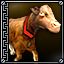

	<a href="index.html">Zetapack Techtree summary (home)</a> |
	<a href="/docs/">Game Help and Documentation</a>
<H4>Choose faction: &nbsp;<A HREF=egypt_overview.html>Egypt</a> |&nbsp;
&nbsp;<A HREF=greece_overview.html>Greece</a> |&nbsp;
&nbsp;<A HREF=indian_overview.html>Indian</a> |&nbsp;
&nbsp;<A HREF=magic_overview.html>Magic</a> |&nbsp;
&nbsp;<A HREF=natulka_overview.html>Natulka</a> |&nbsp;
&nbsp;<A HREF=norsemen_overview.html>Norsemen</a> |&nbsp;
&nbsp;<A HREF=persian_overview.html>Persian</a> |&nbsp;
&nbsp;<A HREF=romans_overview.html>Romans</a> |&nbsp;
&nbsp;<A HREF=tech_overview.html><I>Tech</I></a>
 </H4><P>
<P>

<TABLE BORDER=1><TR><TD WIDTH=250><A NAME="livestock_full"></A></TD><TD WIDTH=500> <B>Livestock</B></TD></TR>
<TR><TD COLSPAN=2 WIDTH=750><A NAME="livestock_G3Dfull"></A></TD></TR>
<TR><TD>Type:</TD><TD>Worker Unit<br>
</TD></TR>
<TR><TD>Creation:</TD><TD>Produced by <A HREF="tech_farm_full.html">Farm</A><BR>
</TD></TR>
<TR><TD>Total Cost: </TD><TD> <NOBR>95</NOBR>&nbsp;<NOBR>-10</NOBR>&nbsp;
<TR><TD>Production Time:</TD><TD>25</TD></TR>
<TR><TD>Maximum Hitpoints:</TD><TD>0</TD></TR>
<TR><TD>Regeneration of Hitpoints:</TD><TD>-</TD></TR>
<TR><TD>Armor-Strength:</TD><TD>-</TD></TR>
<TR><TD>Armor-Type:</TD><TD><a href="attack_and_armor_types.html#organic">Organic</A></TD></TR>
<TR><TD>Sight-Range:</TD><TD>-</TD></TR>
<TR><TD>Movement Type:</TD><TD>Air Unit</TD>
</TABLE><P>
<!-- start footer -->
<!-- end footer -->
